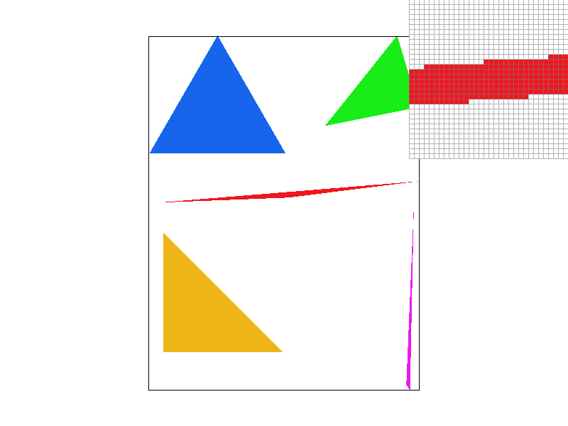
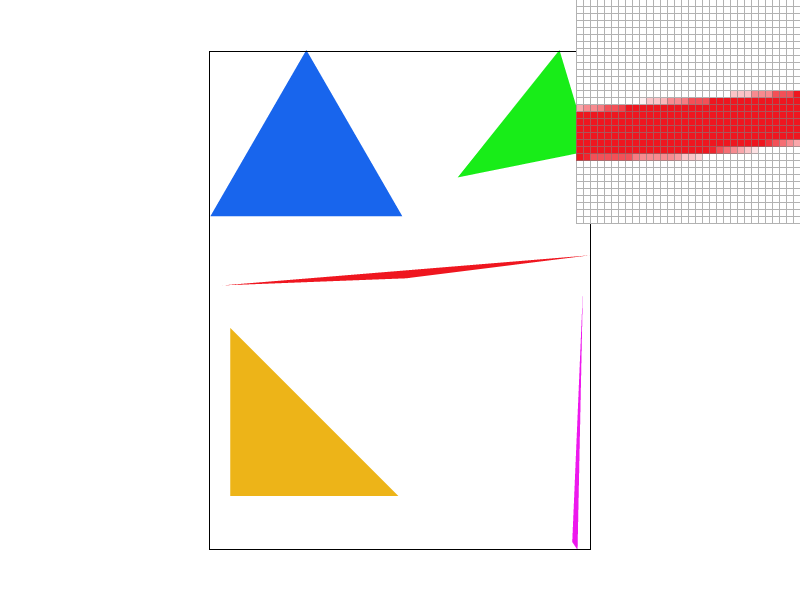
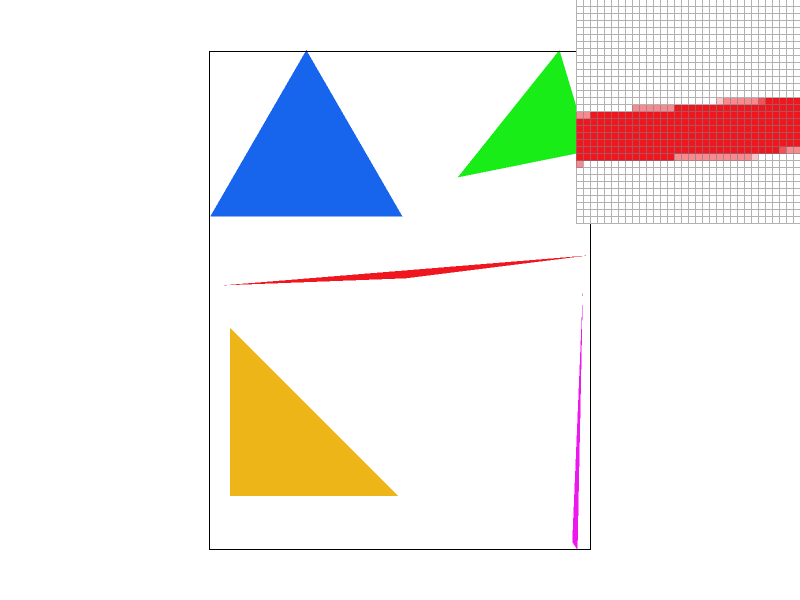
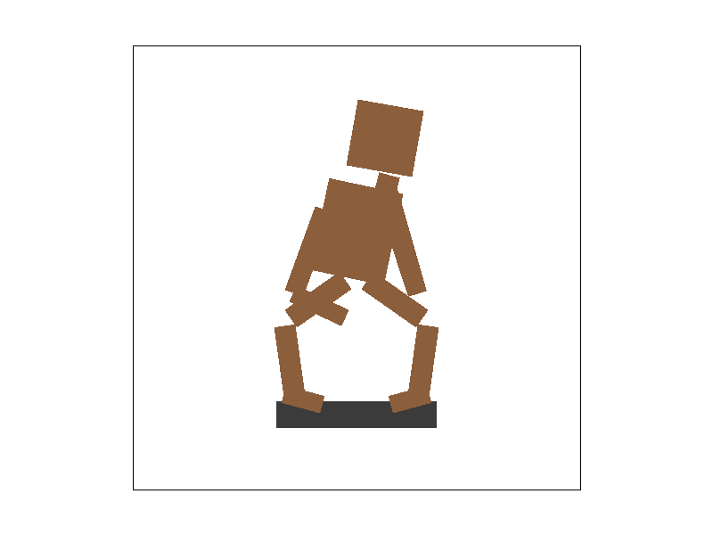
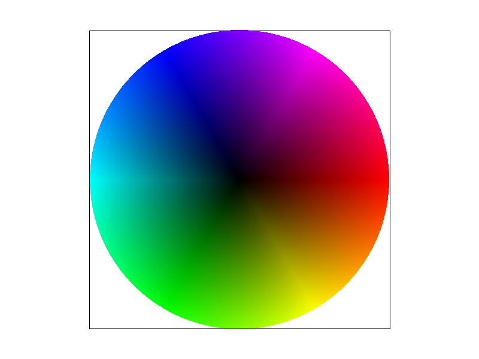
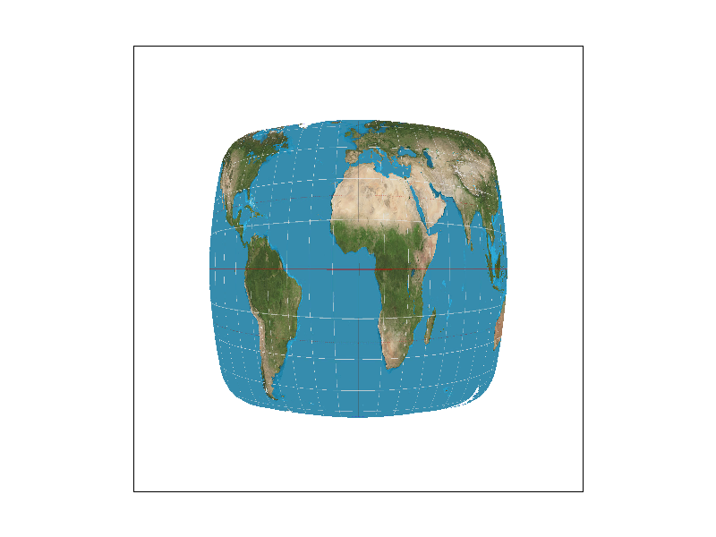
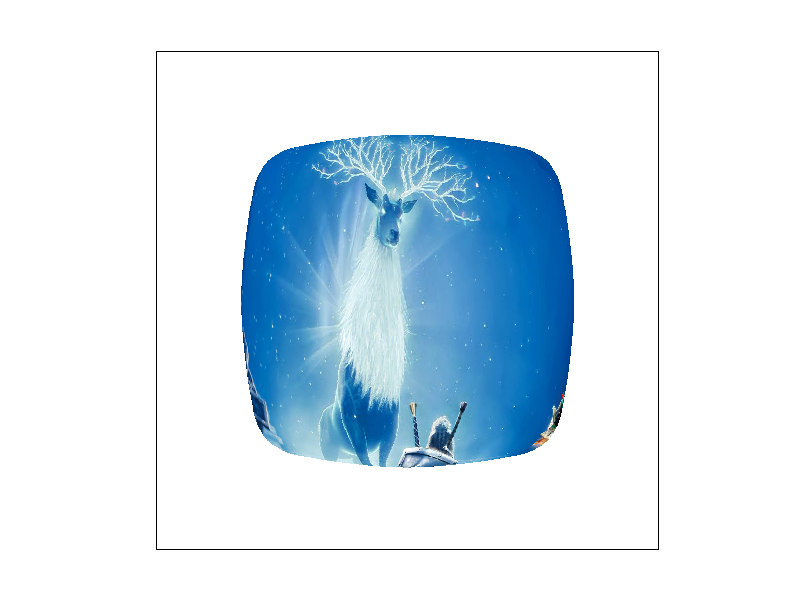
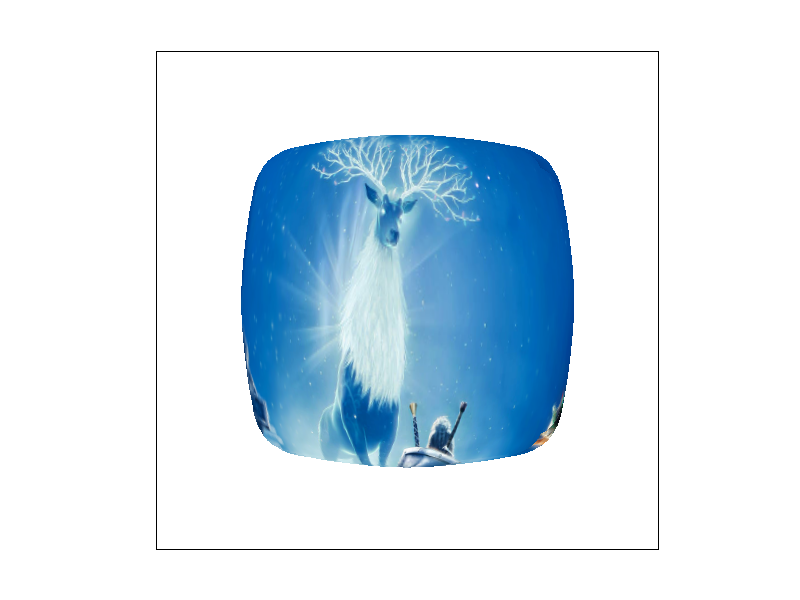

CS184/284A Fall 2026 Homework 1 Write-Up
Link to webpage: https://cal-cs184-student.github.io/hw1-diego-vargas-writeup/
Link to GitHub repository: https://github.com/cal-cs184-student/hw1-diego-vargas-writeup
Overview
In this homework, I worked on the basic parts of a rasterization pipeline. I implemented triangle rasterization, supersampling, transformations, barycentric color interpolation, texture sampling, and mipmapping. This assignment helped me understand how vector shapes and textures are converted into pixels on the screen.
Task 1: Drawing Single-Color Triangles
For Task 1, I implemented triangle rasterization by testing sample points inside the triangle. For each triangle, I first compute its bounding box so that I only check pixels that could possibly be covered by the triangle. This avoids checking every pixel on the screen. Because my algorithm only tests samples inside the triangle's bounding box, its runtime is no worse than an algorithm that checks every sample within that bounding box.
For each pixel inside the bounding box, I test the pixel center against the three edges of the triangle. If the point lies on the same side of all three edges, then the sample is inside the triangle, and the pixel is filled with the triangle's color. The implementation also works regardless of whether the triangle vertices are listed clockwise or counterclockwise.

Task 2: Antialiasing by Supersampling
In Task 2, I implemented supersampling to reduce aliasing along triangle edges. Instead of using only one sample per pixel, the rasterizer stores multiple sub-pixel samples for each pixel and averages them together when producing the final framebuffer.
For each triangle, I test the sub-pixel sample locations to determine whether they are inside the triangle. The colors of all the samples belonging to one pixel are then averaged together. This produces partially covered pixels along triangle boundaries, which makes diagonal edges and thin triangles appear smoother.
The images below show basic/test4.svg at sample rates 1, 4, and 16. As the sample rate increases, the thin red triangle becomes less jagged and its edges appear smoother in the pixel inspector.



Task 3: Transforms
For Task 3, I implemented the transformation matrices for translation, scaling, and rotation. These transformations can be combined to move, resize, and rotate different parts of an SVG scene.
I created my own version of the robot by changing the transforms applied to different body parts. I changed the torso and head rotation, adjusted the position and rotation of the legs, and changed the arms so that the robot looks like it is sitting and leaning forward.
This task helped me understand how multiple transformations can be applied to individual objects and how the order of transformations affects the final position and orientation of the shapes.

The SVG file used for this result is available here: my_robot.svg
{kind=link}
Task 4: Barycentric coordinates
Barycentric coordinates are a way to describe the position of a point inside a triangle using three weights, one for each vertex. The three weights add up to 1. A point closer to one vertex has a larger weight for that vertex.
I used barycentric coordinates to interpolate colors across a triangle. Each vertex can have its own color, and the color at a sample point is computed as a weighted combination of the three vertex colors. This creates a smooth gradient across the triangle.
The image below shows the result from basic/test7.svg at sample rate 1. The different vertex colors blend smoothly across the triangles, producing the color wheel.

Task 5: "Pixel sampling" for texture mapping
For Task 5, I implemented nearest-neighbor and bilinear texture sampling. Nearest-neighbor sampling selects the closest texel to the requested texture coordinate, while bilinear sampling interpolates between the four surrounding texels to produce a smoother result.
Nearest-neighbor sampling is simpler and faster, but it can produce more visible aliasing and blocky artifacts. Bilinear sampling performs additional interpolation and generally produces smoother texture results.
The images below compare nearest and bilinear pixel sampling at sample rates 1 and 16. Increasing the supersample rate reduces aliasing around the edges, while bilinear filtering smooths variation inside the texture itself.
The difference between nearest-neighbor and bilinear sampling is most noticeable when a texture coordinate falls between texel centers or when neighboring texels have very different colors. Nearest-neighbor chooses only one texel, which can make the result appear blocky or abrupt. Bilinear sampling blends the four nearby texels, so transitions are smoother, especially when the texture is magnified.

Task 6: "Level Sampling" with mipmaps for texture mapping
For Task 6, I implemented mipmap level sampling. I estimate how quickly the texture coordinates change in the x and y directions, and I use those derivatives to compute the size of the texture footprint. That footprint is then used to select an appropriate mipmap level.
With level-zero sampling, the renderer always uses mip level 0, which is the highest-resolution texture. Nearest-level sampling chooses the mipmap level closest to the computed level. Linear level sampling blends between the two nearest mipmap levels, which produces smoother transitions between levels.
The images below compare level-zero and nearest-level sampling using both nearest-neighbor and bilinear pixel sampling. I used my own PNG texture for this comparison, and all four images use a supersample rate of 1. I also implemented linear level sampling, which interpolates between adjacent mipmap levels to provide smoother transitions between levels.


Pixel sampling, level sampling, and supersampling reduce aliasing in different ways. Nearest pixel sampling requires the least computation because it reads only one texel, but it can produce blocky or jagged results. Bilinear pixel sampling reads and blends four neighboring texels, so it requires more computation but usually produces smoother textures.
Level sampling uses mipmaps to reduce aliasing when a texture is viewed at a smaller size. Level-zero sampling always uses the highest-resolution texture, which preserves detail but can produce high-frequency aliasing when the texture is minified. Nearest-level sampling chooses a mipmap resolution that better matches the texture footprint, reducing aliasing. Linear level sampling can blend between adjacent mipmap levels for smoother transitions, but it requires additional texture lookups and computation. Mipmapping also requires extra memory because several lower-resolution copies of the texture must be stored.
Supersampling reduces aliasing along geometric edges by taking multiple samples inside each output pixel and averaging them together. Increasing the sample rate improves edge quality, but it also increases both computation and sample buffer memory. For example, a sample rate of 16 stores and processes sixteen samples for each output pixel, so it is more expensive than a sample rate of 1.